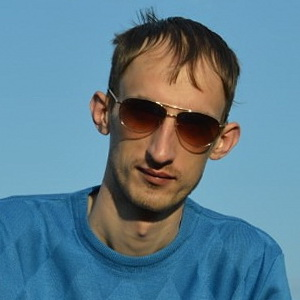

About

Представляюсь..
Здравствуйте! Меня зовут Артур
Люблю..
В свободное от работы времени, занимаюсь всем тем, что так или иначе связанно с информационными технологиями: больше всего интерес проявляю к Frontend (HTML, CSS, JavaScript, Микроформаты) и WEB-разработкам, Фреймворкам и CMS (Node.JS, MODX, WordPress) и конечно, не прохожу мимо Телекоммуникаций (Беспроводные технологии, ИТ-инфраструктура) и Поисковых технологий.
Эксперементирую..
Ради спортивного интереса иногда программирую на Python, правда из-за суеверия и веры в такие пугающие цитаты как: «Пишите код так, как будто сопровождать его будет склонный к насилию психопат, который знает, где вы живёте», свои наработки общественности не придаю. Меня вдохновляют и интересуют две вещи: интересные технологии и продукты, которые могут принести пользу людям.
Хобби..
В частности увлекаюсь настольным теннисом, люблю фотографировать, сутками слушать музыку и влюблен в мир кинематографа.
В жизни..
Родился и вырос в Кировоградской области, будучи абитуриентом, подался на юг, там же получил среднее специальное образование (эколог, промышленная экологию). Ныне — работаю в компании, которая специализируется на серийной и крупносерийной механической обработке изделий из металлов, и я искреннее верю в свое самообразование и верю в то, что по пути жизнь преподнесёт мне чего-то большого…
Кредо..
Есть задача – должен быть инструмент.
В настоящем..
Имею много друзей, но не так много, чтобы не заводить новых, я верю в то, что дружба чего стоит и чёрт возьми: от этого жизнь становиться намного слаще...
В настоящее время нахожусь и живу в Украине (Одесса), со своей женой Оксаной и нашей дочкой, Кирой.
Контакты:
Для связи со мной можно использовать любые современные способы коммуникаций,
основные контакты:
- email: письмо
- skype: dokxpi
Большинство пользователей интернета или пользовались или пользуются социальными
сетями, и я здесь – не исключение: